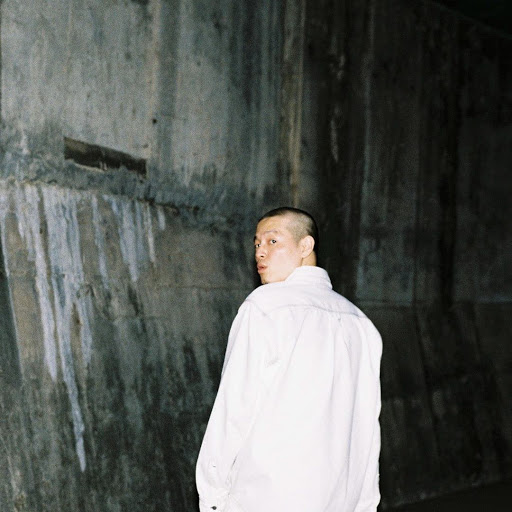

E sens
Album - The anecdote
Album - 이방인

이센스가 돈, 자신의 입지에 관한 견해들을 솔직하게 앨범에 풀어내었다.
현재 꽤나 지쳐있는듯한 모습이며, 그 감정을 잘 전달하였다.
1. Cold World
앨범 발매 이전에 그가 느낀 압박감을 어느 정도 짐작할 수 있다.
그 동안 그가 뱉어냈던 수 많은 언급들이 결국 스스로에게도 부담이 되었다는 것을 느낄 수 있었다.
그가 이 곡에서 말하는 주제는 분명 차가운 세상에 대한 한탄이 주가 되었지만, 그 속에서 은연중에 속내를 드러낸 것이 아닐까 싶다.
2. 알아야겠어
사실 일전에 공연에서, 그리고 MAMA 시상식에서 들려주었던 벌스이다.
공사판 노가다, 가짜 에어포스 침 묻혀서 닦던, 목 늘어난 티셔츠에 고무줄 끼워넣던 과거를 지나 이제는 벌고 난 뒤에 부리는 사치.
다른 이들의 스웩 벌스와 차별화되는 감성.
‘난 실패와 성공 둘 모두와 친해 이젠’
3. BUCKY (Feat. MASTA WU, QIM ISLE)
이전 트랙과 자연스럽게 연결되었다.
성공한 뒤의 기분에 궁금해하던 이전 트랙과는 달리, 이 트랙에서는 어느 정도의 혼란을 녹여낸 듯 하다.
첫 벌스에서는 거짓된 사치에 대한 조롱을 담아내기도 했고, 두 번째 벌스에서는 과거의 자신이 행했던 사치와 그것들을 더욱 갈망하던 모습을 회상한다.
어느 쪽도 정답이 될 수는 없고, 결국 답을 못 내린 체 트랙이 마무리되는 느낌.
4. CLOCK (Feat. Kim Ximya)
드디어 본인 나름대로의 정답 비슷한 것을 낸 듯 하다.
시간이건 돈이건, 그것에 쫓기지 않고 그것을 거머쥐겠다는 야망을 내비친 트랙.
5. 그XX아들같이
성공한 뒤의 사치를 부리는 본인의 모습과, 그걸 바라보며 이런 저런 얘기를 떠들어대는 타인의 모습을 그린다.
자신에게 왈가왈부하는 타인들의 모습을 보며, 돈에 대한 그의 생각은 더더욱 확실히 정의되는 듯 하다.
결국 돈 버는 것이 뭐 나쁜건가.
6. ALL GOOD THING
그XX아들같이에서 말한 주제의식이 이어진다. 이런 저런 왈가왈부들은 다 뒤로 재쳐두고, 더 이상 그들의 이해를 바라지 않는 태도.
7. DANCE
그가 생각하는 good thing, 그리고 positive. 그것이 어떤 것인지를 보여준 트랙이다.
아니 정확히는 보여주려다가 만 느낌이다.
어릴 때는 지금처럼 살고싶어했고, 지금처럼 살아보니 다른 것들이 보인다는 말을 한다.
하지만 그가 본 다른 것이 어떤 것인지 정확히 나타내지는 않았고, 그냥 다 될 거 같다는 말만 되풀이할 뿐이다.
어쩌면 아직 본인 스스로 말하기 부끄러운 것일수도 있고, 머릿속에는 명확하지만 말로 꺼내기 어려운 것일지도 모른다.
하지만 그 목표가 어떤 것이던 간에, 그냥 다 될 거 같다는 태도로 일관하는 것이 진짜 good thing이고 positive이지 않았나 싶다.
8. BOBOS MOTEL
휴식을 바라며, 미래를 꿈꾸는 듯한 트랙이다. 하지만 아직은 쉴 때가 아니라는 듯 하다.
9. BUTTON
BOBOS MOTEL이랑 자연스럽게 이어지는 곡이다. 과거를 회상하지만 다시는 돌아가고 싶어하지는 않는다.
10. 05.30.18
이 날짜는 그냥 녹음한 날짜이고, 원 제목은 ADHD였다고 한다.
ADHD라는 제목에서 알 수 있듯, 머릿속에 뒤섞인 여러 생각들을 정리 없이 그대로 녹여낸 트랙인 듯 하다.
그렇기에 듣는 자체로 감정이 이입되어서 같이 고통스러울 수 있다.
물론 그 어느 트랙보다도 날것에 가까우며 가장 솔직한 트랙이었다는 점에서는 킬링 트랙으로 볼 수도 있다.
11. RADAR (Feat. Kim Ximya)
그가 돈에 대해 노래한 이유, 바로 직전 트랙들에서 정리 안 된 생각을 그대로 내뱉은 이유에 대해 어느 정도 납득하게끔 해주는 트랙.
본인 스스로도 양극성을 가지고 있기에 본인 스스로 거품이라는 말을 서슴없이 뱉어대기도 하지만, 두 번째 벌스에서는 TV에 나오는 누군가처럼은 안 되겠다면서 내 근처라도 와보고 말하라는 태도를 보여주기도 한다.
어쩌면 이센스가 아니면 들려줄 수 없는 벌스이고, 또 이센스이기에 부릴 수 있는 스웩이었다고 생각한다.
김심야의 훅이 중독성이 상당히 강하다. (뗄렐렐렐레라는 가사가 있는데, 우스갯거리가 되어서 김심야가 실제 라이브에서 절대 안부른거라고 한다.) 덕분에 곡의 무게가 덜어진 편.
12. MTLA (Feat. MASTA WU)
앞선 Bobos motel에서 말한 휴식과는 좀 다른 의미의 휴식인 듯 하다.
Bobos motel에서 얘기한 휴식은 정말로 모든 것을 이룬 뒤의 휴식이라면, MTLA는 현실에서 잠시 도피하는 듯 한 느낌이다.
이 앨범 통틀어서 가장 마음이 편해지는 트랙인 것 같다. 휴식하는 부분.
13. BAD IDEA
앞선 트랙들에서 정의내린 돈, 그리고 스스로 결론지어버린 것에 대해서 다시 한 번 혼란을 느낀다.
이 곡에서 말하는 Bad idea가 부정적인 생각이 아닌, 문자 그대로 진짜 나쁜 생각들인 것 같다.
14. DON (한정반)
*한정판
15. 서울 (한정반)
*한정판